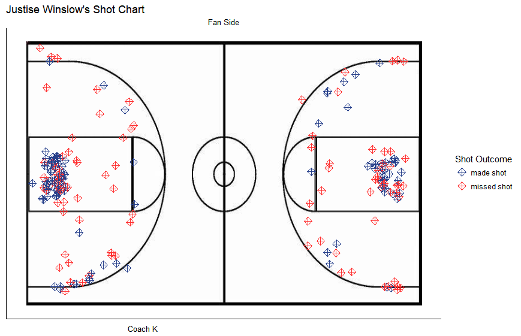

Chapter 5 Exploratory Data Analysis
Initial analysis of the data focused on understanding the many features available in the Duke Men’s Basketball dataset. This exploratory data analysis explores shot attempt patterns through the years, as well as potential biases with shot location.
5.1 Changes in Shot Attempt Patterns
As one of the best basketball programs in the nation, Duke University Men’s Basketball draws in a number of highly desirable and NBA-ready recruits each year. For this, most players stay for only a year before signing and playing for the National Basketball Association. A popular trend for many skilled basketball players, this transition to professional basketball has been coined by players as being “one-and-done.” Duke had two players (Rodney Hood, Jabari Parker) drafted in the 2014 draft, three players (Jahlil Okafor, Justise Winslow, and Tyus Jones) drafted in the 2015 draft, and one player (Brandon Ingram) drafted in the 2016 draft. With so many players playing the minimum in college, this paper concentrates on the analysis of players who played more than one season with the Duke Men’s Basketball team, and had significant minutes with their time at Duke. With these requirements, it is difficult to find the perfect player for analysis because players like Marshall Plumlee, only had significant playing time his senior year because it took time to fully develop him as a competitive player.
Quinn Cook, on the other hand, serves as an interesting example because he had consistent minutes for the 2013-2015 seasons. Quinn Cook’s shot attempts were thus divided into each year to understand how his shooting style has changed during his time at Duke.

Looking at the Quinn Cook’s shot attempts for his junior season, he was fairly even with his shooting, missing most of his 3 point shots, and hitting most of his 2 point shots in the paint. It appears as though he prefers to shoot from the right wing slightly more than he shoots from the left wing.

In 2014, however, it can be noted that Quinn Cook has transitioned to shots that are closer to the basket and minimized the amount of 3 point shot attempts. He brought his shot attempts closer inwards, which aligns with the trend that he is better at shooting when he is closer to the basket. Compared to 2013, he attacks more along the nail, which could be attributed to Quinn Cook’s growing strength as an off-the-jump shooter.

In the 2015 season, Quinn Cook moves further out from the basketball, attempting more 3s. His preference for shooting in the right wing is more pronounced. A new trend apparent from the graph, however, shows that Quinn Cook shoots more corner 3s than the previous two years. While his shot attempts in the paint have slightly changed from 2013, Quinn Cook definitely has a unique playing style that has overall been consistent in that he avoids shooting in the extended elbows and short corners.
5.2 Biases in Shot Location
While looking at the shot chart of each player shows their shooting preferences, putting their shot chart in the context of Cameron is another important aspect to note when analyzing a player’s shot preferences. Cameron Indoor Stadium’s student section, known as the Cameron Crazies, has been ranked as one of the best student sections in the country by Bleacher Report, For The Win, and FOX Sports (to name a few). Furthermore, during the first half, a team’s offense is on the opponent’s side and a team’s defense is on their home side. Thus, by acknowledging where a player shoots in context to the location of the fans and Coach K may reveal some biases to their shot location. Are players showboating for the Cameron Crazies or are they showboating for Coach K? To assess this trend, multiple Duke players were screened to note any possible trends in shooting habits.
Intuitively, a player’s shot chart distributon should be an even reflection of the other half of the court (ie. if half court was inflected onto the other half court, the shot distributions should be similar). From Quinn Cook’s Shot Charts, this intuition is true; it is clear that he prefers shooting from the left side on both sides–indicating that there does not exist an obvious bias in his shot location based on exterior factors. However, when looking at a player like Justise Winslow, his shot attempts are more prevalent on Duke’s side of the bench, and less present on its complementary side. Perhaps, Justise is showboating for his teammates or Coach K, and plays off of the exterior factors in a game. Further analysis will be conducted in later iterations of this paper to better understand this bias.
